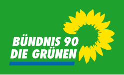
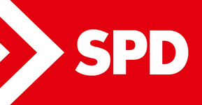
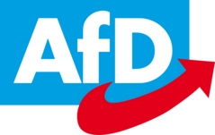
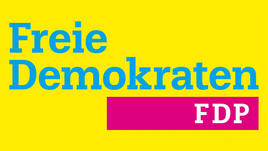
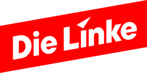

<!DOCTYPE html>
<html lang="de">
<head>
    <meta charset="UTF-8">
    <meta name="viewport" content="width=device-width, initial-scale=1.0">
    <title>Wahlprogramm 2025</title>
    <link rel="stylesheet" href="styles.css">
    <script src="https://cdn.jsdelivr.net/npm/chart.js"></script>

</head>
</html>
<body>
    <div id="blurredContent">


        <body>
            <header>
        
                <div class="hero">
                    <h1>Wahlprogramme 2025</h1>
                <h2>Wahlprogramme der Parteien für die Bundestagswahl</h2>
                    <p>Vergleiche die Meinungen der Parteien zu den wichtigsten Themen.</p>
                </div>
                <nav>
                    <ul>
                        <li><a href="#themes">Themen</a></li>
                        <li><a href="#parties">Parteien</a></li>
                        <li><a href="#about">Über mich</a></li>
                    </ul>
                </nav>
        
            </header>
        
        
            <main>
                <section id="themes" class="card-container">
                    <h2>Themen</h2>
                    <div class="card" id="theme-MigrationSecuity">
                        <h3>Migration und Innere Sicherheitk</h3>
                        <p>Vergleiche die Standpunkte der Parteien zu Außen- und Sicherheitspolitischen Fragen.</p>
                        <button class="filter-button" onclick="showPartiesForTheme('Migration und Innere Sicherheit')">Mehr erfahren</button>
                    </div>
                    <div class="card" id="theme-foreignSecurity">
                        <h3>Außen- und Sicherheitspolitik</h3>
                        <p>Vergleiche die Standpunkte der Parteien zu Außen- und Sicherheitspolitischen Fragen.</p>
                        <button class="filter-button" onclick="showPartiesForTheme('Außen- und Sicherheitspolitik')">Mehr erfahren</button>
                    </div>
                    <div class="card" id="theme-social">
                        <h3>Soziales</h3>
                        <p>Vergleiche die Standpunkte der Parteien zu Sozialen Fragen.</p>
                        <button class="filter-button" onclick="showPartiesForTheme('Soziales')">Mehr erfahren</button>
                    </div>
                    <div class="card" id="theme-finances">
                        <h3>Finanzen</h3>
                        <p>Vergleiche die Standpunkte der Parteien zu Finanziellen Fragen.</p>
                        <button class="filter-button" onclick="showPartiesForTheme('Finanzen')">Mehr erfahren</button>
                    </div>
                    <div class="card" id="theme-climate">
                        <h3>Klima</h3>
                        <p>Vergleiche die Standpunkte der Parteien zu Umweltthemen.</p>
                        <button class="filter-button" onclick="showPartiesForTheme('Klima')">Mehr erfahren</button>
                    </div>
                    <div class="card" id="theme-education">
                        <h3>Bildung</h3>
                        <p>Entdecke, welche Reformen im Bildungssystem geplant sind.</p>
                        <button class="filter-button" onclick="showPartiesForTheme('Bildung')">Mehr erfahren</button>
                    </div>
                    <div class="card" id="theme-economy">
                        <h3>Wirtschaft</h3>
                        <p>Erfahre, wie die Parteien die Wirtschaft fördern wollen.</p>
                        <button class="filter-button" onclick="showPartiesForTheme('Wirtschaft')">Mehr erfahren</button>
                    </div>
                </section>
        
        
            <section id="parties">
              <h2>Parteien</h2>
              <div class="party-logos">
                 
                 
                 
                
                
                
                
              </div>
            </section>
        
        
            <div id="party-modal" class="modal">
              <div class="modal-content">
                <span class="close" onclick="closeModal()">&times;</span>
                <h2 id="modal-party-name"></h2>
                
                <h3>Standpunkte:</h3>
                <div id="modal-party-positions"></div>
                <h3>Wahlprogramm:</h3>
                <p id="modal-party-program"></p>
              </div>
            </div>	
        
                <section id="about">
                    <h2>Über mich</h2>
                <p>Ich bin Julian W. aus der Laborschule Dresden (Verano 9). Ich habe diese Plattform entwickelt, um die politische Meinungsbildung zu erleichtern. Verfolgend  k&ouml;nnt ihr mich auf meinem <a href="https://github.com/MarsgameJu/Wahlprogramme2025">Github</a></p>
                </section>
        
        
        
            </main>
        
            <footer>
                <p>Die dargestellten Informationen basieren auf den Grundsatz- und Wahlprogrammen der Parteien und erheben keinen Anspruch auf Vollständigkeit oder aktuelle Änderungen. Es besteht keine Garantie auf Exaktheit, und Fehler können nicht ausgeschlossen werden.</p>
                <p>2025 Wahlprogramm Übersicht</p>
                <a href="admin-login.html" style="color: #ffcc00; font-size: 0.8em;text-align: right;">Admin Login</a>
            </footer>
        
            <script src="script.js"></script>
        </body>


        <!-- Du kannst hier auch mehr Inhalt hinzufügen -->
    </div>

    <div id="popup">
        <div id="popupContent">
            <p>Möchtest du auf dieser Website bleiben oder zur Original-Website wechseln?</p>
            <button class="popup-button" id="stayButton">Hier bleiben</button>
            <button class="popup-button" id="redirectButton">Zur Original-Website</button>
        </div>
    </div>

    <script>
        const stayButton = document.getElementById('stayButton');
        const redirectButton = document.getElementById('redirectButton');
        const popup = document.getElementById('popup');
        const blurredContent = document.getElementById('blurredContent');

        // Blur aktivieren, wenn Popup angezeigt wird
        window.onload = () => {
            blurredContent.style.filter = 'blur(9px)';
        };

        stayButton.addEventListener('click', () => {
            popup.style.display = 'none';
            blurredContent.style.filter = 'none'; // Blur entfernen
        });

        redirectButton.addEventListener('click', () => {
            window.location.href = 'https://www.wahlprogramme2025.de';
        });
    </script>
</body>
</html>